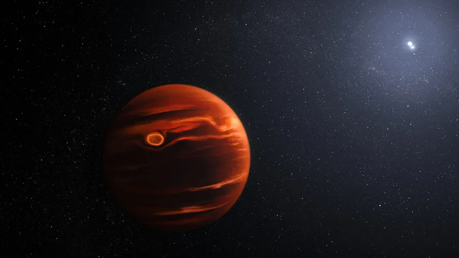

March 22, 2023
VHS 1256 b: clouds of silicate dust
The James Webb Space Telescope has detected clouds of silicate dust in the atmosphere of VHS 1256 b. Some of the grains resemble fine smoke particles, others very hot, tiny grains of sand. Temperatures in the cloud layer reach about 830 degrees Celsius.
The planet, about 40 light-years away, orbits two stars in about 10,000 years and is young at 150 million years. During its 22-hour day, its brightness changes more strongly than that of any other known planetary-mass object. The same spectrum showed water, methane and carbon monoxide as well as evidence of carbon dioxide.
Source: ESA/Webb: "Webb spots swirling, gritty clouds on remote planet.", 2023-03-22